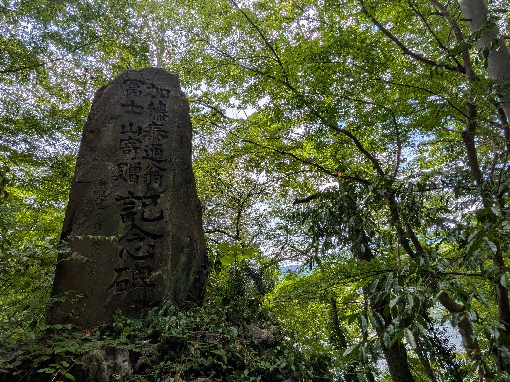

大洲の視点 ・ 出典: 愛媛県「愛媛の道路2024」、総務省「市町村別決算状況調」、大洲市議会 会議録ほか（きっかけ: note「セグロGeo」） ・ 約19分で読める
人は減っても、道はほとんど減らない。大洲の市道1,677kmを誰が直すのか

 メモう
メモう
大洲の道、ぜんぶつなげると2000kmをこえるんよ。
谷ぞいに集落が散らばってるから、どうしても長くなるの。
人が減っても道は減らせない。ここがむずかしいところなんよ。
3行でいうと調べた資料 35本
- 大洲市の市道は約1,677km。人が住める土地あたりでは県内20市町でいちばん長い
- 道路と橋のお金は1人あたり県平均の約2.5倍。それでも市道1kmあたりでは県内17位にとどまる
- まちをまとめる計画はあるが、対象は市の面積の約1割で、道の目標は入っていない
大洲市が管理する道、市道は、約1,900路線ある。全部つなげると約1,700kmになる。
家の前の舗装に穴があく。山道に枝がせり出す。市に連絡しても、すぐには直らないことがある。令和8年6月の市議会で、市の建設部門はその理由をこう答えている。
市道延長は約1,700キロメートルと長く、また各地域からの修繕要望等が数多くございますので、対応に時間を要し、市民の皆様に御迷惑をおかけしていることも事実でございます
大洲市議会 令和8年6月定例会（2日目）会議録
市が理由に挙げたのは、道の長さだった。
では、大洲の道は本当に長いのか。ほかの市町と比べてどうなのか。直すお金は足りているのか。人が減っていく中で、道は短くできるのか。県の道路統計と国の決算統計、市議会の会議録で確かめた。
大洲市の市街地は、大洲城の下を流れる肱川沿いの平地に集まっている。一方で、旧肱川町・旧河辺村のエリアや、上須戒・柳沢・大川といった小さな集落が、肱川の本流や支流沿いに点在している。集落が散らばっていれば、それをつなぐ道も長くなる。
大洲市が自分の財布で直す道は、全体の約83％
先に道の種類を押さえておく。道路法は道路を4つに分けていて、違いは「誰が管理するか」である。
種類高速自動車国道
- 誰が管理するか
- 国（実際の運営はNEXCOなど）
- お金はどこから
- 国＋通行料
種類一般国道
- 誰が管理するか
- 国が直接管理する区間と、県に任せる区間がある
- お金はどこから
- 国＋県
種類都道府県道
- 誰が管理するか
- 愛媛県
- お金はどこから
- 県
種類市町村道（市道）
- 誰が管理するか
- 大洲市
- お金はどこから
- 市
私道は、この4つのどれでもない。道路法の道路ではないので、市は原則として舗装も補修もしない。家の前の道が「市に言えば直る道」なのか「自分で直す道」なのかは、ここで決まる。
この記事で見るのは、4つのうち市が全額を負担する市道である。大洲市統計書（令和7年版）によると、市内の道路の総延長は約2,061km（令和3年4月時点）。このうち市道が約1,701km。全体の約83％を占める。
大洲市統計書(令和7年版)。令和3年4月時点
- 市道(大洲市の財布で直す) 約1,701km
- 国道・県道など(残り) 約360km
長いかどうかは、何で割るかで見え方が変わる。道路の長さを全国の市区町村ごとに塗り分けたnoteの記事「道路密度の可視化 -道路が多い西日本、少ない東日本-」は、可住地面積（山や湖を除いた、人が住める土地）で割るものさしを使っていた。西日本は道路密度が高く、東日本は低い、とはっきり分かれたという。筆者は、西日本ではご先祖が山深くまで入植し、長い時間をかけて道路網ができてきたのではないか、と書いていた。
大洲市の総面積は432.12平方kmで、そのうち可住地は116.97平方km。可住地面積割合は27.1％で、愛媛県平均の29.3％より低い。道路の総延長を総面積で割ると4.8km/平方km（統計書の値）だが、可住地で割り直すと約17.6km/平方km、noteと同じ単位にすると約176m/haになる。
県内20市町と並べると、大洲はどこにいるのか
人が住める土地あたりで比べると、大洲市の市道は県内20市町でいちばん長い。
比べるのは、市や町が自分の財布で直す市町村道だけにした。延長と人口は、愛媛県が国の道路施設現況調査をもとにまとめている「愛媛の道路2024」の資料編（令和5年4月1日現在）から、可住地面積は総務省統計局の「統計でみる市区町村のすがた2026」（2024年の値）から取った。
この表で、大洲市の市町村道は1,677.0km。人口38,682人で割ると1人あたり43.35m、可住地面積116.97平方キロで割ると可住地1平方キロあたり14.34kmになる。20市町を、可住地あたりの長い順に並べた。
| 市町 | 市町村道の延長 | 1人あたり | 可住地1平方キロあたり |
|---|---|---|---|
| 大洲市 | 1,677.0km | 43.35m | 14.34km |
| 四国中央市 | 1,009.2km | 12.62m | 11.12km |
| 西予市 | 1,143.7km | 34.06m | 9.78km |
| 愛南町 | 528.2km | 28.79m | 9.37km |
| 宇和島市 | 1,257.8km | 18.82m | 9.21km |
| 松野町 | 151.6km | 43.32m | 9.20km |
| 松前町 | 185.0km | 6.30m | 9.08km |
| 砥部町 | 261.8km | 12.96m | 8.71km |
| 内子町 | 577.6km | 39.92m | 8.39km |
| 今治市 | 1,583.0km | 10.87m | 8.07km |
| 伊方町 | 368.2km | 47.97m | 7.95km |
| 新居浜市 | 494.9km | 4.39m | 7.79km |
| 松山市 | 1,810.6km | 3.60m | 7.51km |
| 伊予市 | 589.3km | 17.18m | 7.41km |
| 鬼北町 | 263.8km | 28.71m | 7.33km |
| 東温市 | 365.3km | 10.88m | 7.27km |
| 上島町 | 111.9km | 18.38m | 7.18km |
| 八幡浜市 | 443.4km | 14.66m | 7.12km |
| 西条市 | 1,093.9km | 10.78m | 6.87km |
| 久万高原町 | 381.8km | 56.58m | 6.12km |
| 県全体 | 14,298.0km | 11.03m | 8.58km |
2位の四国中央市（11.12km）より3km以上長く、県全体の8.58kmの1.7倍ほどになる。人が住める土地は市の面積の27.1％しかないのに、その狭い土地の上に、県内でいちばん密に市道が通っている。
1人あたりで見ると、大洲市は久万高原町（56.58m）、伊方町（47.97m）に次ぐ県内3位で、11の市の中では1位になる。県全体の11.03mのおよそ4倍だ。上の2町は、人口が1万人に届かない町である。大洲市は4万人近い人口がありながら、この位置にいる。
愛媛の道路2024 資料編(令和5年4月1日現在)の延長と人口から計算
上の2町は人口が1万人に届かない。11の市の中では大洲市が1位。
全国と比べた数字もある。大洲市の公共施設等白書（平成28年1月）は、市民1人あたりの市道延長を35.6mと出し、全国平均の8m、大洲市と近い人口規模の都市（人口4万7千人台・12市町平均）の16mと並べていた。
大洲市公共施設等白書(平成28年1月)
延長そのものは、松山市（1,810.6km）に次ぐ県内2位で、3位の今治市は1,583.0kmだった。この2位は昔からで、平成20年3月の定例会でも、議員が道路特定財源の議論の中でこう述べている。
大洲でも市道延長が1,659キロと県下でも２位の市道延長を持っており、改良率も32％、舗装率は73％、改良舗装をやってほしいという地域の要望が強いことも知っています。
大洲市議会 平成20年3月定例会（1日目）会議録。議員の発言
同じ議会で市の建設部門も、平成19年4月時点の市道1,630kmのうち改良済みは526kmで、全国や県内の水準を大きく下回り、生活に身近な道路を中心に整備が遅れていると答えている。道が長いこと自体は、20年近く前から市の中で言われていたことだった。
道路と橋のお金は、1人あたりでは重く、1kmあたりでは薄い
では、その道にいくらかけているのか。総務省の「市町村別決算状況調」には、市町村ごとに道路橋りょう費が載っている。道路と橋を造り、直し、管理するのに使ったお金の合計だ。新しく造る費用や県の事業への負担金なども入っていて、維持と補修だけの額ではない。
大洲市は令和4年度が約16.5億円、5年度が約13.2億円、6年度が約9.0億円と、年によって大きく動く。そこで3年の平均をとると年12.91億円になる。20市町について同じ平均を出し、上の表の人口と市町村道の延長で割った。市町村道1kmあたりの多い順に並べる。
| 市町 | 道路橋りょう費（3年平均） | 1人あたり | 市町村道1kmあたり |
|---|---|---|---|
| 東温市 | 9.72億円 | 28,945円 | 266.1万円 |
| 伊方町 | 8.83億円 | 115,061円 | 239.9万円 |
| 新居浜市 | 11.85億円 | 10,515円 | 239.5万円 |
| 松山市 | 34.53億円 | 6,858円 | 190.7万円 |
| 西条市 | 15.28億円 | 15,057円 | 139.7万円 |
| 上島町 | 1.56億円 | 25,656円 | 139.6万円 |
| 鬼北町 | 3.68億円 | 40,023円 | 139.4万円 |
| 松野町 | 2.10億円 | 59,993円 | 138.5万円 |
| 砥部町 | 3.50億円 | 17,348円 | 133.8万円 |
| 八幡浜市 | 5.86億円 | 19,376円 | 132.2万円 |
| 今治市 | 20.78億円 | 14,270円 | 131.2万円 |
| 四国中央市 | 12.39億円 | 15,492円 | 122.7万円 |
| 松前町 | 2.20億円 | 7,482円 | 118.8万円 |
| 久万高原町 | 3.80億円 | 56,307円 | 99.5万円 |
| 内子町 | 5.11億円 | 35,285円 | 88.4万円 |
| 愛南町 | 4.44億円 | 24,206円 | 84.1万円 |
| 大洲市 | 12.91億円 | 33,379円 | 77.0万円 |
| 西予市 | 7.36億円 | 21,918円 | 64.3万円 |
| 伊予市 | 3.67億円 | 10,692円 | 62.3万円 |
| 宇和島市 | 6.56億円 | 9,814円 | 52.2万円 |
| 県全体 | 176.12億円 | 13,589円 | 123.2万円 |
大洲市は、1人あたりでは年33,379円で県内6位。県全体の13,589円の約2.5倍を出している。ところが市町村道1kmあたりでは77.0万円で、20市町のうち17位。県全体の123.2万円の6割ほどしかない。
1人あたりに直すと重いのに、道1kmにかけられる額は薄い。道が長すぎて、お金が行き渡らない。冒頭の「対応に時間を要し」という答弁は、この数字の形とそろっている。
ただし、人口と延長は令和5年4月1日、決算は令和4〜6年度の平均で、時点が少しずれる。順位は、その前提での目安である。
維持と補修だけに絞った額は、古いものしか見つからなかった。公共施設等白書では、市道の新設・改良・維持を合わせて年平均約8.5億円、このうち道路橋梁維持費は年平均約1億3,671万円（平成21～25年度実績）だった。
お金の重さでいえば、舗装より橋のほうがはるかに大きい。令和5年9月の定例会で、市の建設部門は、市道1,896路線・約1,700kmの中に478の橋梁と3つのトンネルが含まれていると答えた。市道の延長で割ると3.6kmに1つ、路線数で割れば4路線に1つ。谷筋に道を通せば川を渡ることになるので、この密度は肱川の流域という土地の形そのものだと思う。同じ答弁はこう続く。
橋梁478橋のうち約半数が修繕の目安とされる約50年を経過しようとしており、老朽化が懸念される状況でございます
大洲市議会 令和5年9月定例会（2日目）会議録
約半数、およそ239橋が50年に届こうとしている。市は平成26年度から、道路法にもとづく5年に一度の法定定期点検で傷み具合を段階で評価し、翌27年度から順に修繕している。令和5年度は新畑の前橋と白滝大橋を修繕し、八多喜地区の河内トンネルを点検すると説明されていた。
人が減る間に市道は増え、令和3年からは24km短くなった
人口が減っても道はすぐには減らせない、と最初は考えていた。調べ直すと、減らせないどころか、しばらくは増えていた。市議会の会議録に、市の建設部門が答えた市道の実数が残っている。
| 時点 | 市道の路線数 | 市道の延長 |
|---|---|---|
| 平成19年4月1日 | 1,789路線 | 1,630km |
| 令和5年9月 | 1,896路線 | 約1,700km |
| 令和7年6月 | 約1,900路線 | 約1,700km |
16年で107路線、約70km増えた。路線数で6.0％、延長で4.3％の増加である。この増減は、上の2つの数字から自分で計算した。答弁の「約1,700km」は丸めた数字なので、延長の増え方は、このあと県の統計で確かめ直す。
同じ期間、人のほうは減っている。平成17年の合併時は住民基本台帳で約5万2,000人だった（平成28年6月の定例会での議員発言）。いまは37,931人。27.1％減っている。
人が3割近く減る間に、道は増えた。市道の延長を人数で割ると、合併時なら1人あたり31.3m。いまは1人あたり44.8m。1.43倍である。
1.43倍。市道の延長を人数で割った値。「約1,700km」は市の答弁の丸めた数字。
44.8mは、答弁の丸めた数字で割ったものだ。県の表の1,677.0kmを同じ表の人口で割ると、前の節の表のとおり43.35mになる。どちらで見ても、合併時の31.3mより4割ほど長い。同じ道を、より少ない人数で支えている。
なぜ増えるのか。新しく開発された宅地の中の道は、作った人が市に引き渡し、市議会の議決で市道として認定されると市の道になる。認定されれば、そこから先は市が直す。議案には「市道の路線認定について」がほぼ毎回並び、令和8年3月の定例会では路線の認定・変更・廃止の議案が3つ並んでいた。令和7年9月の定例会では、東大洲地区の旧松下寿跡地の市道2路線が認定にかけられている。工場の跡地に道ができて、その日から市が直す道が2本増えた、ということだ。経緯は旧松下寿の跡地に、市道が2本できていた。市はその土地を買っていないに書いた。
ただ、廃止の議案もある。「一度認定したら永久に市道」というわけではない。県の「愛媛の道路」の資料編は、毎年4月1日の実延長をメートル単位で出している。2017年版から2024年版までの8冊から、大洲市の市町村道を拾って並べた。
各年4月1日。愛媛の道路 資料編(2017年版〜2024年版)
数字を表で見る
| 時点（4月1日） | 市町村道の延長 |
|---|---|
| 平成28年 | 1,691.9km |
| 平成29年 | 1,695.0km |
| 平成30年 | 1,696.3km |
| 平成31年 | 1,696.9km |
| 令和2年 | 1,699.5km |
| 令和3年 | 1,701.2km |
| 令和4年 | 1,686.2km |
| 令和5年 | 1,677.0km |
令和3年から2年で24.2km短くなった。減った分のほぼ全部が旧長浜町の区域。
いちばん長かったのは令和3年4月の1,701.2km。平成19年4月の1,630kmから約71km伸びたところで山になり、そこから2年で24.2km短くなった。全体の1.4％にあたる。令和5年4月の1,677.0kmは、平成19年より47.0km長い。
減ったのはどこか。県の資料編には、合併前の旧市町村ごとの内訳も載っている。令和5年4月の1,677.0kmを分けると、旧大洲市が915.0km、旧長浜町が369.6km、旧肱川町が251.0km、旧河辺村が141.4kmだった。
愛媛の道路2024 資料編(令和5年4月1日現在)
- 旧大洲市 915.0km
- 旧長浜町 369.6km
- 旧肱川町 251.0km
- 旧河辺村 141.4km
立地適正化計画の区域(大洲都市計画区域)は、大洲地域と長浜地域の一部だけ。旧肱川町と旧河辺村は入っていない。
令和3年4月と見比べると、減った分のほぼ全部が旧長浜町の区域だった。394.3kmが369.6kmになり、24.7km減っている。そのうち19.7kmは砂利道だった。旧大洲市は、むしろ0.7km伸びている。どの路線を、なぜ市道から外したのかは、調べた範囲では分からなかった。会議録で確かめられたのは、令和4年3月と令和5年3月の定例会に「市道の路線廃止について」という議案が出ていることまでで、会議録には議案の名前しか残っていない。
市道は減らせないわけではなかった。ただ、減ったのは全体の1.4％で、舗装されていない道が中心だった。
山の市道は、枝の管理まで手が回っていない
道路法は、道路管理者に「常時良好な状態に保つように維持し、修繕」する努力義務を課している。市も、通報があれば現地を見て、緊急性が高ければ速やかに直すと述べている。そのうえでの、冒頭の「対応に時間を要し」という答弁である。
山間部の話は、令和7年6月の定例会に出ていた。道にはみ出した枝は道路管理者が切れることになっているが、市の答弁はこうだった。
現在市道は約1,900路線、延長にして約1,700キロメートルあるため、特に山間部においては枝木の管理が行われていないのが現状でございます
大洲市議会 令和7年6月定例会（2日目）会議録
自治会にやってもらってはどうか、という提案には、高所での危険な作業なので依頼は考えていない、と答えた。枝が車の通行の邪魔になっていれば、連絡を受けて現地を確認し、伐採などを検討するという。
この枝は、山に住む人の暮らしに直接かかわる。令和8年6月の定例会で、別の議員が山あいの高齢者の様子をこう話している。
道も、病院でも行こうかと思ったら、風でも吹いたら、いろいろな枝が落ちたり、木が落ちたりということで、なかなか下りれないときもあります。
大洲市議会 令和8年6月定例会（3日目）会議録。議員の発言
舗装の穴だけでなく、道の上に伸びてくる枝まで含めて1,700km分ある。
住む場所をまとめれば、道は短くなるのか
道が長くて直しきれないなら、人が住む場所をまとめればいい。noteの記事も、こうした地域が今後迫られる選択としてコンパクトシティの考え方を紹介していた。住むエリアを絞り込み、使う人が減った道路や集落のインフラは縮めていく、という発想だ。ただ、大洲の計画を読むと、道を短くする形にはなっていない。
大洲市には、そのための計画がすでにある。立地適正化計画だ。市町村が「ここに住んでほしい」という区域（居住誘導区域）と、「ここに病院や店を置いてほしい」という区域（都市機能誘導区域）を地図の上で決める。大洲市は令和2年10月に作った。令和3年9月の市議会で、二宮隆久市長はこう説明している。
この計画は、都市拠点への一極集中や、強制的な集約を図るものではなく、時間をかけながら集約化を促進していこうというもので、周辺の地域拠点につきましては、それぞれの地域の特徴を生かした魅力ある地域拠点を構築しながら、都市拠点と地域拠点を公共交通ネットワークで結ぶ拠点連携型都市構造を目指すものでございます。
大洲市議会 令和3年9月定例会（2日目）会議録。市長の答弁
計画づくりには、平成29年3月の定例会で915万5,000円の債務負担行為が組まれ、その議会の反対討論では、周辺地域の切り捨てに拍車をかける、という意見も出ていた。計画は令和8年3月に5年ぶりに改定され、4つの数値目標のうち2つがスタート地点より後退していた。改定の中身は大洲の活性化計画は「絵に描いた餅」か。5年ぶりの改定で答え合わせをしたに書いた。市長は令和7年12月の定例会で、都市機能の集約は周辺部に格差を生む懸念があるとして、市全体に当てはめることには慎重な考えを示している。そのやりとりは「賢く縮む」を大洲でもやるのか。市長は「分野を選ぶ」と答えたにまとめてある。
なぜそう言えるのか。計画書（令和8年3月変更）と県の統計を読み合わせると、理由は3つある。
1つ目は、計画の範囲だ。計画書は対象区域を「大洲都市計画区域（約4296.0ha）」としている。大洲地域と長浜地域の一部だけで、市の面積432.12平方キロの約1割にあたる。肱川地域と河辺地域は、区域に入っていない。上で見たとおり、旧肱川町と旧河辺村の市道だけで392.4km、市道全体の23.4％ある。少なくともこの分は、計画の外にある。
2つ目は、目標の中身だ。計画の数値目標は、都市機能誘導区域内の誘導施設の数、居住誘導区域内の人口密度、公共交通圏の人口割合、居住誘導区域内で浸水が想定される人口の4つ。道の長さや道路の費用にかかわる目標は入っていない。
3つ目は、強制ではないことだ。令和8年6月の定例会でも、都市整備課長が計画の目的と方針をこう説明した。
大洲市立地適正化計画の目的は、人口減少下でも行政コストを抑え、医療・商業・公共交通などの暮らしの基盤を将来世代へ持続可能な形で引き継ぐことにあります。市の基本方針は、周辺部の特性や地域コミュニティーを大切にしながら、拠点間を交通網で結ぶコンパクト・プラス・ネットワークであり、ライフステージに応じた緩やかな住み替えを基本としております。
大洲市議会 令和8年6月定例会（3日目）会議録。都市整備課長の答弁
目的の最初に「行政コストを抑え」とある。ただ、住み替えは本人が選ぶ。山あいに家が1軒でも残れば、そこへ続く道は要る。
強制しないのは、市の方針だけの話ではない。この仕組みをつくった2014年の国会で、居住誘導区域の外で届出を求めることが、憲法22条の居住・移転の自由とぶつからないかを問われた。国の答えはこうだった。
都市機能誘導区域外ないし居住誘導区域外につきましては、届け出を求めるという緩やかな手法がとられるものであることから、これらの区域の設定が、居住や移転、営業の自由を阻害するものではない。つまり、憲法二十二条の侵害とはならないと考えております。
衆議院 国土交通委員会（2014年4月9日）。国土交通大臣政務官の答弁
その届出も、居住誘導区域の外で3戸以上の住宅を建てる開発などに限られる（都市再生特別措置法施行令）。個人が自分の土地に家を1軒建てるだけなら、大きな造成を伴わない限り、届出も要らない。どこに住むかは本人が決める。だから、道も残る。
まとめれば本当にお金が浮くのかは、国もまだ確かめている途中だ。国土交通省は、計画の効果をはかる物差しの1つに「市町村の一人当たり歳出額」を入れている。その検証の資料には、こう書かれていた。
2012年から2017年の一人当たり歳出額の対前年比増減率は立地適正化計画作成済市町村で平均2.4%、未作成市町村で平均は3.0％、2017から2022年では、それぞれ4.8%、4.7％となっており、全国的に歳出は増加傾向
国土交通省「当検討会のとりまとめと評価指標の検証」45ページ
直近の5年では、計画を作った市町村と作っていない市町村で、1人あたりの歳出の伸びはほとんど変わらない。同じ資料は、居住や都市機能の誘導が進んだとしても「直ちに歳出額が変動するものではない」ことに留意が必要だ、とも書いている。
人を集めることそのものも、全国で苦戦している。同じ資料によると、居住誘導区域のデータがある365都市のうち6割超で、居住誘導区域の人口密度が下がっていた。全国平均では、線引き都市（市街化区域と市街化調整区域を分けている都市）が0.1人/haの上昇、非線引き都市が0.9人/haの低下である。
大洲市は非線引きだ。愛媛県の大洲都市計画区域マスタープラン（平成30年3月）に、市街地が広がる見込みは低いとして「本区域には区域区分を定めない」と書かれている。県内で線引きをしているのは、松山広域と今治広域の2つの都市計画区域だけである。数字の上では、密度が下がりやすいほうの分類にあたる。
では、コンパクトシティを「実現した」と言える市はあるのか。よく名前が挙がるのは富山市だ。公共交通が便利な地域に住む人の割合を、2005年の28％から2025年に42％へ上げる目標を立て、2022年には39.9％まで来ている。その富山市も、計画書に「郊外での居住を否定することはせず」と書いている。町なかの魅力を上げて、選んでもらう形である。
大洲の周辺部には、将来は便利な場所へ住み替えたいという高齢者の声もある。上で引いた令和8年6月の定例会で、議員が伝えていた。受け皿が無ければ市の外へ出てしまう、という心配とあわせてである。山に住み続けたい人もいれば、下りたいのに行き先が無い人もいる。まとめる話は、一方向ではない。
道を短くするには、人が住む場所をまとめるしかない。その計画は5年前からある。ただ、計画の区域は市の1割で、道の目標は入っておらず、住み替えは本人が選ぶ形になっている。計画があることと、道が短くなることの間には、ずいぶん距離がある。
調べる前は、道路の維持費というのは市の会計の中の一項目だと思っていた。実際には、1,900の路線と478の橋と3つのトンネルと、山の上まで伸びる枝の話だった。県内でいちばん密な市道を、県全体の6割ほどのお金で1kmずつ支えている、という話でもあった。人が減るぶん、1人あたりの持ち分は静かに増えていく。
出典・参考にした資料
道路密度の可視化 -道路が多い西日本、少ない東日本-｜セグロGeo(2026年3月ごろ掲載。記事のきっかけ) 大洲市統計書 令和７年版（大洲市）(令和7年発行。道路の総延長は令和3年4月時点) 大洲市統計書（令和７年版）Ⅰ 基本指標（大洲市公式サイト・総面積／可住地面積）(令和7年発行) 大洲市公共施設等白書（大洲市、平成28年１月）(平成28年1月発行) 道路法（昭和二十七年法律第百八十号）／e-Gov法令検索（第3条の道路の種類、第13条以下の管理者の定め、第42条の維持・修繕）(2026年9月確認) 愛媛の道路2024 資料編「市町村規模及び道路普及率」（愛媛県道路建設課、令和5年4月1日現在。20市町の市町村道の実延長・人口・面積）(2026年3月31日更新。2026年9月27日に取得) ↳ 愛媛の道路2024 パンフレット・資料編（掲載ページ） 愛媛の道路2024 資料編「市町別道路現況（市町村合併前）」（令和5年4月1日現在。旧大洲市・旧長浜町・旧肱川町・旧河辺村ごとの市町村道と砂利道の延長）(2026年3月31日更新。2026年9月27日に取得) 愛媛の道路2023 資料編「道路普及率」（令和4年4月1日現在。大洲市の市町村道1,686.2km）(2026年3月31日更新。2026年9月27日に取得) ↳ 愛媛の道路2021 資料編「道路普及率」（令和2年4月1日現在） ↳ 愛媛の道路2020 資料編「道路普及率」（平成31年4月1日現在） ↳ 愛媛の道路2019 資料編「道路普及率」（平成30年4月1日現在） ↳ 愛媛の道路2018 資料編「道路普及率」（平成29年4月1日現在） ↳ 愛媛の道路2017 資料編「道路普及率」（平成28年4月1日現在） 愛媛の道路2022 資料編（愛媛県オープンデータ、令和3年4月1日現在。「道路普及率」で大洲市の市町村道1,701.2km、「市町別道路現況（市町村合併前）」で旧長浜町394.3km）(2022年6月24日更新) 統計でみる市区町村のすがた2026「B 自然環境」（総務省統計局。20市町の総面積・可住地面積、2024年）(2026年6月19日公開) 令和6年度市町村別決算状況調「(1)都市別 ウ目的別歳出内訳」（総務省。道路橋りょう費）(令和6年度決算。2026年9月27日に取得) ↳ 同「(2)町村別 ウ目的別歳出内訳」 令和5年度市町村別決算状況調「(1)都市別 ウ目的別歳出内訳」（総務省。道路橋りょう費）(令和5年度決算。2026年9月27日に取得) ↳ 同「(2)町村別 ウ目的別歳出内訳」 令和4年度市町村別決算状況調「(1)都市別 ウ目的別歳出内訳」（総務省。道路橋りょう費）(令和4年度決算。2026年9月27日に取得) ↳ 同「(2)町村別 ウ目的別歳出内訳」 大洲市議会 令和5年9月定例会 会議録（2日目）— 市道1,896路線・約1,700km、478の橋梁と3つのトンネル、橋梁の約半数が約50年経過、平成26年度からの法定定期点検(2023年9月の会議) 大洲市議会 令和8年6月定例会 会議録（2日目）— 市道延長約1,700kmで修繕要望が多く対応に時間を要しているという市の答弁(2026年6月の会議) 大洲市議会 令和8年6月定例会 会議録（3日目）— 立地適正化計画の目的と「緩やかな住み替え」の方針（都市整備課長）、山あいの枝と住み替えの声（議員）(2026年6月の会議) 大洲市議会 令和7年6月定例会 会議録（2日目）— 市道約1,900路線・約1,700km、山間部では枝木の管理が行われていないという答弁(2025年6月の会議) 大洲市議会 令和7年12月定例会 会議録（4日目）— 「賢く縮む」への市長答弁。都市機能の集約は地域間に格差が生じる懸念がある、市全体への適用は慎重に検討(2025年12月の会議) 大洲市議会 平成20年3月定例会 会議録（1日目）— 市道延長1,659キロで県下2位、改良率32％、舗装率73％(2008年3月の会議) 大洲市議会 平成20年3月定例会 会議録（2日目）— 平成19年4月1日現在で市道1,789路線・実延長1,630km、うち526kmが改良済み(2008年3月の会議) 大洲市議会 令和8年3月定例会 会議録（4日目）— 市道の路線認定・変更・廃止がそれぞれ議案として並んでいる(2026年3月の会議) 大洲市議会 令和4年3月定例会 会議録（4日目）— 第39号議案「市道の路線廃止について」（議案の名前のみ）(2022年3月の会議) 大洲市議会 令和5年3月定例会 会議録（4日目）— 第53号議案「市道の路線廃止について」（議案の名前のみ）(2023年3月の会議) 大洲市議会 令和7年9月定例会 会議録（4日目）— 旧松下寿跡地の市道2路線の認定(2025年9月の会議) 大洲市議会 平成28年6月定例会 会議録（2日目）— 平成17年の合併時は住民基本台帳で約5万2,000人(2016年6月の会議) 大洲市 住民基本台帳 人口・世帯（令和8年3月31日現在・大洲市公式サイト）— 総人口37,931人(令和8年3月31日現在) 大洲市議会 令和3年9月定例会 会議録（2日目）(2026年9月23日に会議録を確認。二宮隆久市長が「大洲市立地適正化計画を令和2年10月に策定いたしました」「都市拠点への一極集中や、強制的な集約を図るものではなく、時間をかけながら集約化を促進していこうというもの」と答弁している) 大洲市議会 平成29年3月定例会 会議録（4日目）(2026年9月23日に確認。立地適正化計画策定事業が平成29〜30年度で915万5,000円の債務負担行為とされたこと、反対討論で「周辺地域のますますの切り捨てに拍車をかける」と述べられたことを確認) 大洲市立地適正化計画（令和8年3月変更・全202ページ）— 計画対象区域は大洲都市計画区域（約4296.0ha）、第11章の4つの数値目標(令和8年3月変更) 大洲都市計画区域マスタープラン（愛媛県、平成30年3月）— 23ページ「本区域には区域区分を定めない」(平成30年3月発行) 都市計画区域について（愛媛県都市計画課）— 線引きは松山広域と今治広域の都市計画区域(2016年2月5日更新) 当検討会のとりまとめと評価指標の検証（立地適正化計画の実効性の向上に向けたあり方検討会 第7回資料）／国土交通省(2026年9月27日に全49ページを取得。26ページ「365都市のうち6割超で居住誘導区域の人口密度が下降」、線引き都市の全国平均が0.1人/ha上昇・非線引き都市が0.9人/ha低下。44〜45ページ「市町村の一人当たり歳出額」の検証) 第186回国会 衆議院 国土交通委員会 第9号 会議録（国会会議録検索システム）— 居住誘導区域外の届出と憲法22条の関係を問われた、国土交通大臣政務官の答弁(2014年4月9日の会議。2026年9月27日に確認) 都市再生特別措置法施行令（e-Gov法令検索）— 第33条、居住誘導区域外で届出が要るのは3戸以上の住宅など(2025年4月16日施行の条文。2026年9月27日に確認) 富山市立地適正化計画（富山市、令和5年11月30日変更）— 21ページ「郊外での居住を否定することはせず」、22ページ 公共交通が便利な地域に住む人の割合 2005年28％・2022年39.9％・2025年目標42％(令和5年11月変更。2026年9月27日に取得)この記事をサイトに掲載した日: 2026/04/03